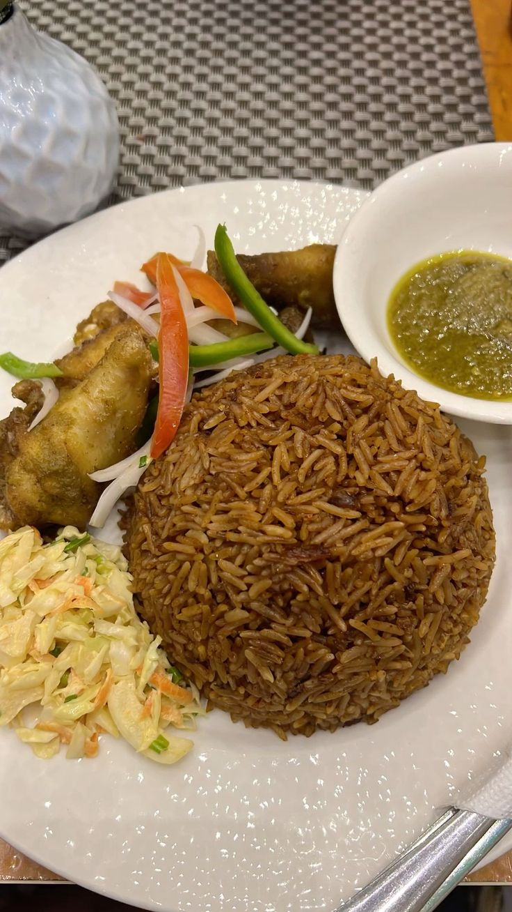

Home
Jallof

Description
Ghanaian Jallof Rice is a flavorful one-pot dish made with rice, tomtoes, and spices. It's smoky, slightly spicy and a party favorite across west Africa.
Ingredients.
- 3 cups of long grain rice.
- 1 can of tomatoes or 5 fresh tomatoes blended.
- 3 table spoons of tomato paste.
- 1 cup of vegetable oil.
- 2 teaspoons of curry powder.
- 3 cups of chicken stock.
- Salt and Maggi to taste.
Steps
- Heat oil in a large pot and fry the onions until golden.
- Add tomato paste and fry for 3 mins.
- Add blended tomatoes, cur.y, thyme, salt and pepper. Cook until the oil floats to the top.
- Pour in chicken stock and bring it to a boil.
- Wash the rice and add it to te pot. Stir once.
- Cover tightly and cook on low heat for 30-35 mins.
- Food is readyyy!